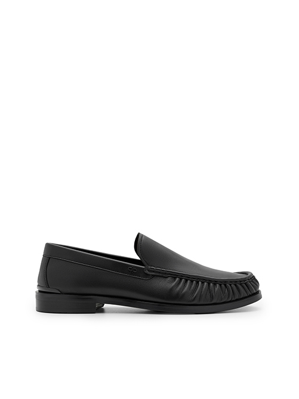
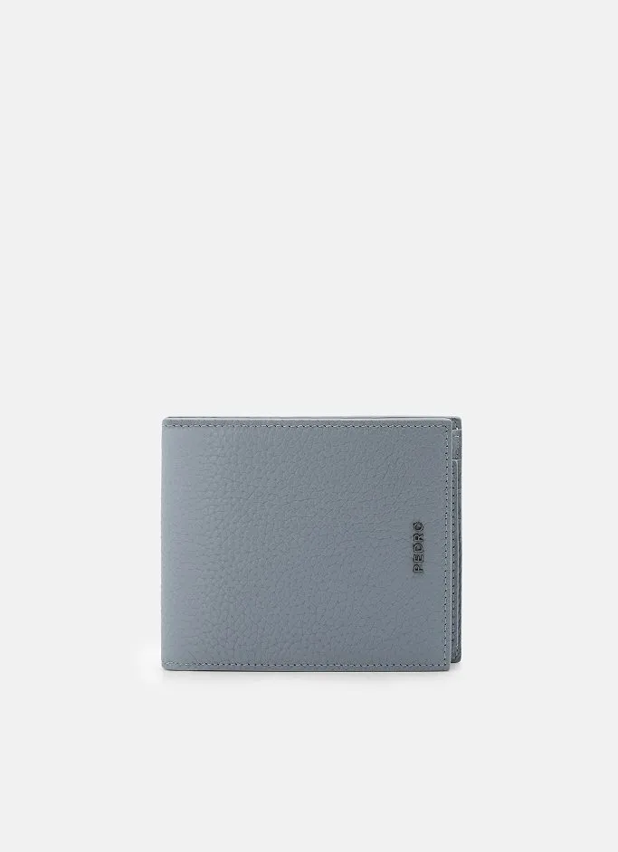

<style>
  /* ----------------------------------------------------
     SHARED BASE
     All variants below share this CSS-grid system: a left gutter / centred
     content column / right gutter, with named grid areas. The right gutter
     holds a secondary image that sticks in place while its own section
     scrolls, cropped at that section's edges by clip-path so it never
     bleeds into the next one. Run several sections back to back (as below)
     to see one sticky image hold, crop away, and the next pick up — that
     hand-off is the actual point of the effect, which is hard to notice
     from a single short section alone.
     ---------------------------------------------------- */
  .sticky-grid {
    --sg-text: #000;
    --sg-muted: #333;
    --sg-bg: #fff;
    --sg-tint: #eeeeee;
    --sg-center: 460px;
    --sg-gap: 64px;
    --sg-sticky-top: 40px;
    padding: 40px 24px 0;
    color: var(--sg-text);
    background: var(--sg-bg);
  }

  /* Grey band, used here on variants 3–5 so they read as one block */
  .sticky-grid--tinted {
    --sg-bg: var(--sg-tint);
  }

  .sticky-grid__grid {
    display: grid;
    grid-template-columns: minmax(0, 1fr) minmax(0, var(--sg-center)) minmax(0, 1fr);
    grid-template-areas:
      ".     intro aside"
      "label body  aside"
      ".     media aside";
    column-gap: var(--sg-gap);
    max-width: 1440px;
    margin: 0 auto;
    clip-path: inset(0);
  }

  /* Intro (variant 1 only) */
  .sticky-grid__intro {
    grid-area: intro;
    margin-bottom: 110px;
  }

  /* Logo: an SVG logotype inside the h1 (the alt text is the heading) */
  .sticky-grid__logo {
    margin: 0 0 22px;
    line-height: 0;
  }

  .sticky-grid__logo-img {
    display: block;
    width: 220px;
    max-width: 100%;
    height: auto;
  }

  .sticky-grid__tagline {
    margin: 0;
    font-family: 'Source Serif 4', "Libre Baskerville", Georgia, serif;
    font-size: 15px;
    line-height: 1.45;
    max-width: 300px;
  }

  /* Label */
  .sticky-grid__label {
    grid-area: label;
    justify-self: center;
    margin: 0;
    font-family: 'Source Serif 4', "Libre Baskerville", Georgia, serif;
    font-size: 14px;
    font-weight: 400;
    line-height: 1.35;
  }

  /* Heading (variant 3 only) */
  .sticky-grid__heading {
    grid-area: heading;
    margin: 0 0 18px;
    font-family: 'Inter', "Helvetica Neue", Arial, sans-serif;
    font-size: 24px;
    font-weight: 400;
    line-height: 1.15;
  }

  /* Body: fills the centre column */
  .sticky-grid__body {
    grid-area: body;
    margin-bottom: 70px;
    font-family: 'Inter', "Helvetica Neue", Arial, sans-serif;
    font-size: 14px;
    line-height: 1.4;
    color: var(--sg-muted);
  }

  .sticky-grid__body p {
    margin: 0 0 14px;
  }

  .sticky-grid__body p:last-child {
    margin-bottom: 0;
  }

  .sticky-grid__body--more {
    grid-area: more;
    margin: 70px 0 0;
  }

  /* Centre image or video */
  .sticky-grid__media {
    grid-area: media;
    margin: 0;
  }

  .sticky-grid__media-img,
  .sticky-grid__media-video {
    display: block;
    width: 100%;
    height: auto;
  }

  /* Sticky aside
     Negative bottom margin stretches the aside past the grid, so the image
     keeps sticking while the section scrolls away and clip-path crops it
     from below. */
  .sticky-grid__aside {
    grid-area: aside;
    align-self: stretch;
    margin-bottom: -100vh;
  }

  .sticky-grid__sticky {
    position: sticky;
    top: var(--sg-sticky-top);
    width: 100%;
    max-width: 180px;
    margin: 0;
  }

  .sticky-grid__sticky-img {
    display: block;
    width: 100%;
    height: auto;
  }

  .sticky-grid__caption {
    margin: 8px 0 0;
    font-family: 'Source Serif 4', "Libre Baskerville", Georgia, serif;
    font-size: 12px;
    line-height: 1.4;
    color: var(--sg-muted);
  }

  /* Optional link around a sticky image or tile image */
  .sticky-grid__link {
    display: block;
    height: 100%;
  }

  .sticky-grid__link:focus-visible {
    outline: 1px solid var(--sg-text);
    outline-offset: 2px;
  }

  /* ----------------------------------------------------
     VARIANT 2 — Text only (no image or aside)
     ---------------------------------------------------- */
  .sticky-grid--text {
    padding-top: 120px;
    padding-bottom: 80px;
  }

  .sticky-grid--text .sticky-grid__grid {
    grid-template-areas: "label body .";
    clip-path: none;
  }

  .sticky-grid--text .sticky-grid__body {
    margin-bottom: 0;
  }

  /* ----------------------------------------------------
     VARIANT 3 — Heading + sticky aside via CSS subgrid
     Centred column, sticky aside running from the media down. Subgrid lets
     the sticky block sit bottom-aligned to the media, then stick as you
     scroll, without needing fixed row heights.
     ---------------------------------------------------- */
  .sticky-grid--heading {
    padding-top: 120px;
    padding-bottom: 80px;
  }

  .sticky-grid--heading .sticky-grid__grid {
    grid-template-areas:
      ".     heading ."
      ".     body    ."
      ".     media   aside"
      ".     more    aside";
  }

  .sticky-grid--heading .sticky-grid__aside {
    display: grid;
    grid-template-rows: subgrid;
  }

  .sticky-grid--heading .sticky-grid__sticky {
    grid-row: 1;
    align-self: end;
  }

  /* ----------------------------------------------------
     VARIANT 4 — Two-tile gallery, centre column to the right edge
     ---------------------------------------------------- */
  .sticky-grid--gallery {
    padding-top: 40px;
    padding-bottom: 0;
  }

  .sticky-grid--gallery .sticky-grid__grid {
    grid-template-areas: ". gallery gallery";
    clip-path: none;
  }

  .sticky-grid__gallery {
    grid-area: gallery;
    display: grid;
    grid-template-columns: 1fr 1fr;
    grid-template-rows: minmax(0, 1fr);
    gap: 10px;
    aspect-ratio: 37 / 22;
  }

  /* Shared gallery/strip tile */
  .sticky-grid__tile {
    min-height: 0;
    margin: 0;
    overflow: hidden;
  }

  .sticky-grid__tile-img {
    display: block;
    width: 100%;
    height: 100%;
    object-fit: cover;
  }

  /* ----------------------------------------------------
     VARIANT 5 — Label + body, then two linked images at the centre
     column's width, then a closing paragraph
     ---------------------------------------------------- */
  .sticky-grid--strip {
    padding-top: 30px;
    padding-bottom: 80px;
  }

  .sticky-grid--strip .sticky-grid__grid {
    grid-template-areas:
      "label body  ."
      "strip strip strip"
      ".     more  .";
    clip-path: none;
  }

  .sticky-grid__strip {
    grid-area: strip;
    justify-self: center;
    width: min(100%, var(--sg-center));
    display: grid;
    grid-template-columns: repeat(2, minmax(0, 1fr));
    gap: 4px;
  }

  .sticky-grid__strip .sticky-grid__tile {
    aspect-ratio: 3 / 4;
  }

  /* Tablet */
  @media (max-width: 991.98px) {
    .sticky-grid {
      --sg-center: 420px;
      --sg-gap: 32px;
    }

    .sticky-grid__sticky {
      max-width: 160px;
    }
  }

  /* Mobile: single column, centred intro / labels / heading, full-bleed
     media, sticky and crop off */
  @media (max-width: 767.98px) {
    .sticky-grid__grid {
      grid-template-columns: minmax(0, 1fr);
      grid-template-areas:
        "intro"
        "label"
        "body"
        "aside"
        "media";
      clip-path: none;
    }

    .sticky-grid__intro {
      margin-bottom: 72px;
      text-align: center;
    }

    .sticky-grid__logo-img {
      margin: 0 auto;
    }

    .sticky-grid__tagline {
      margin: 0 auto;
    }

    .sticky-grid__label {
      justify-self: center;
      margin-bottom: 24px;
      text-align: center;
    }

    .sticky-grid__label br {
      display: none;
    }

    .sticky-grid__heading {
      font-size: 22px;
      text-align: center;
    }

    .sticky-grid__body {
      margin-bottom: 40px;
    }

    .sticky-grid__body--more {
      margin: 40px 0 0;
    }

    /* Main image / video runs edge to edge */
    .sticky-grid__media {
      margin: 0 -24px;
    }

    /* Aside: full content width, no sticking */
    .sticky-grid__aside {
      margin-bottom: 40px;
    }

    .sticky-grid__sticky {
      position: static;
      max-width: none;
      margin: 0;
    }

    .sticky-grid--text {
      padding-top: 56px;
      padding-bottom: 56px;
    }

    .sticky-grid--text .sticky-grid__grid {
      grid-template-areas:
        "label"
        "body";
    }

    .sticky-grid--heading {
      padding-top: 56px;
      padding-bottom: 56px;
    }

    .sticky-grid--heading .sticky-grid__grid {
      grid-template-areas:
        "heading"
        "body"
        "media"
        "aside"
        "more";
    }

    .sticky-grid--heading .sticky-grid__aside {
      display: block;
      margin: 40px 0 0;
    }

    /* Gallery: tiles stacked, edge to edge */
    .sticky-grid--gallery {
      padding-top: 0;
    }

    .sticky-grid--gallery .sticky-grid__grid {
      grid-template-areas: "gallery";
    }

    .sticky-grid__gallery {
      grid-template-columns: minmax(0, 1fr);
      grid-template-rows: none;
      gap: 0;
      margin: 0 -24px;
      aspect-ratio: auto;
    }

    .sticky-grid__gallery .sticky-grid__tile {
      aspect-ratio: 3 / 4;
    }

    /* Strip: tiles stacked at content width */
    .sticky-grid--strip {
      padding-top: 56px;
      padding-bottom: 56px;
    }

    .sticky-grid--strip .sticky-grid__grid {
      grid-template-areas:
        "label"
        "body"
        "strip"
        "more";
    }

    .sticky-grid__strip {
      width: 100%;
      grid-template-columns: minmax(0, 1fr);
      gap: 24px;
    }

    .sticky-grid__strip .sticky-grid__tile {
      aspect-ratio: 4 / 5;
    }
  }
</style>

<!-- Variant 1: intro + label + body + image, sticky aside image -->
<section class="sticky-grid">
  <div class="sticky-grid__grid">

    <header class="sticky-grid__intro">
      <h1 class="sticky-grid__logo">
        
      </h1>
      <p class="sticky-grid__tagline">A short tagline introducing the project or research platform shown below.</p>
    </header>

    <h2 class="sticky-grid__label">Why it Exists</h2>

    <div class="sticky-grid__body">
      <p>Opening paragraph setting up the idea &mdash; what problem or observation this section responds to.</p>
      <p>A second paragraph developing the thought further, building toward the image below.</p>
    </div>

    <div class="sticky-grid__media">
      
    </div>

    <aside class="sticky-grid__aside">
      <div class="sticky-grid__sticky">
        
        <p class="sticky-grid__caption">A short caption describing the sticky side image, which stays in view while this section scrolls.</p>
      </div>
    </aside>

  </div>
</section>

<!-- Variant 2: text only, no image or aside -->
<section class="sticky-grid sticky-grid--text">
  <div class="sticky-grid__grid">

    <h2 class="sticky-grid__label">Material <br>&amp; Mindset</h2>

    <div class="sticky-grid__body">
      <p>Rather than seeing material as something to shape around an idea, the project explores what happens when ideas begin with the material itself.</p>
      <p>Each piece carries its own dimensions and character. Instead of forcing consistency, these differences become part of the design process.</p>
      <p>The material begins the conversation and design responds.</p>
    </div>

  </div>
</section>

<!-- Variant 3: heading + body + video + closing paragraph, linked sticky aside via subgrid -->
<section class="sticky-grid sticky-grid--heading sticky-grid--tinted">
  <div class="sticky-grid__grid">

    <h2 class="sticky-grid__heading">Beyond the Surface</h2>

    <div class="sticky-grid__body">
      <p>Opening paragraph for this section &mdash; framing what's being explored before the video below.</p>
    </div>

    <div class="sticky-grid__media">
      <video class="sticky-grid__media-video" autoplay loop muted playsinline aria-label="Looping landscape video">
        <source src="../../media/landscape_video-1.mp4" type="video/mp4">
      </video>
    </div>

    <div class="sticky-grid__body sticky-grid__body--more">
      <p>A follow-up paragraph continuing the thought after the video, developing it further.</p>
      <p>A closing paragraph that rounds out the section.</p>
    </div>

    <aside class="sticky-grid__aside">
      <div class="sticky-grid__sticky">
        <a class="sticky-grid__link" href="#">
          
        </a>
        <p class="sticky-grid__caption">Caption for the sticky side image, which links to a product.</p>
      </div>
    </aside>

  </div>
</section>

<!-- Variant 4: two-tile gallery -->
<section class="sticky-grid sticky-grid--gallery sticky-grid--tinted">
  <div class="sticky-grid__grid">

    <div class="sticky-grid__gallery">
      <div class="sticky-grid__tile">
        
      </div>
      <div class="sticky-grid__tile">
        
      </div>
    </div>

  </div>
</section>

<!-- Variant 5: label + body, two linked images at centre-column width, closing paragraph -->
<section class="sticky-grid sticky-grid--strip sticky-grid--tinted">
  <div class="sticky-grid__grid">

    <h2 class="sticky-grid__label">Research <br>Process</h2>

    <div class="sticky-grid__body">
      <p>A short paragraph introducing the process shown in the images below.</p>
    </div>

    <div class="sticky-grid__strip">
      <div class="sticky-grid__tile">
        <a class="sticky-grid__link" href="#">
          
        </a>
      </div>
      <div class="sticky-grid__tile">
        <a class="sticky-grid__link" href="#">
          
        </a>
      </div>
    </div>

    <div class="sticky-grid__body sticky-grid__body--more">
      <p>A closing paragraph reflecting on the process, rounding out the section.</p>
    </div>

  </div>
</section>
